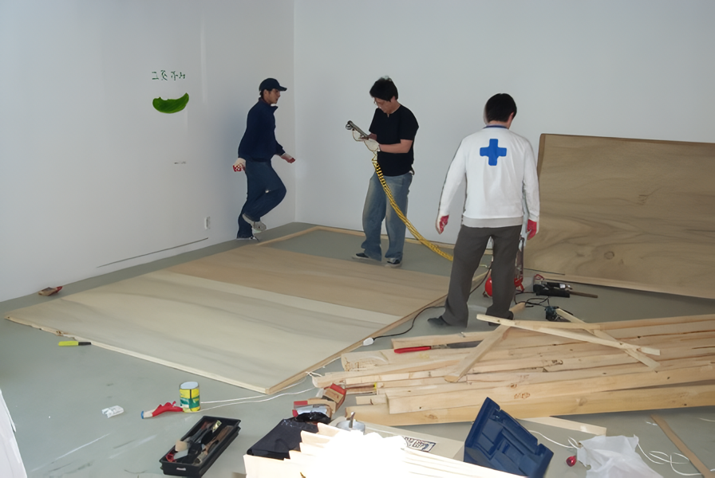

the World set 최재훈展 / CHOIJAEHOON / 崔宰熏 / video.installation
2004 스톤앤워터 전시지원공모선정
2004_0417 ▶ 2004_0509 / 월요일 휴관
_waifu2x_photo_noise3_scale1.png)
초대일시 / 2004_0417_토요일_05:00pm
2004 스톤앤워터 전시지원공모 선정작
첫번째 석수시장 연계 프로젝트
토요일과 일요일엔 작가를 만나실 수 있습니다.
관람시간 / 12:00pm~08:00pm / 월요일 휴관
보충대리공간 스톤앤워터
경기도 안양시 만안구 석수2동 286-15번지 2층
Tel. 031_472_2886
set 같은 세상에서... 2003년 11월 22일 ● 도시, 여기 안에서 살고있는 사람들, 온갖 즐겁거나 슬프거나 괴로움의 비명이 들리는 이곳에서 한가지 물음을 던져본다. 정말일까? 이 모든 것이 정말일까? 영화처럼 하나의 세트이면 어쩌지? 우리는 매일 직접 보지도 못하는 소식과 사람들을 믿으며, 내일의 즐거움을 기대하며, 새로운 태양을 기대하며 살아간다. 이것은 도시 안에서의 개인의 외로움이자 고독을 드러내주는 부분일지도. 다시 말해 하나의 세트 같은 이 도시는 늘 새로움과 변화 그리고 시스템이 만들어 가는 아름다움으로 사람들을 유혹한다. 최면에 걸린 것처럼 끌려서 다다른 곳은, 피노키오가 끌려가는 환상의 섬처럼 그 속은 겉모습과 달리 모든 것이 존재한다. ● 고통, 슬픔, 괴로움, 아픔.... 지하철 계단에서 구걸하기 위해 손을 벌리고 있는 노인, 사장으로부터 임금을 못 받아 슬픔에 잠겨있는 노동자, 병원 앞에서 돈이 없어 쫓겨나는 환자, 일을 마치고 집에 있는 가족을 생각하며 퇴근하다 교통사고를 당한 아버지. 철거당하는 포장마차를 보며 절규하는 어머니... 이 도시는 이들을 부정한다. 다음 세대를 다시 이 도시로 끌어들이기 위해서라면.... 그런 것일까? ● 내가 살고있는 이곳에 대한 물음을 놀이동산의 풍경을 통해 새롭게 이미지화 시키고자한다. 실제 같지 않은 하나의 이상한 도시에서 들리는 비명소리들이 괴기스럽고 환상적인 느낌으로 또 하나의 world를 탄생시킴으로서 양면을 모두 보여 줄 수 있는 세상을 만들어본다. ● Set ............... 사람 및 생활체에 대하여 어느 특정한 자극대상이나 사상(事象)을 선택적으로 감수(感受)하도록 하는 조건, 또는 어느 특정 활동 및 반응을 불러일으키도록 하는 조건을 말한다. 엄밀히 말하면 구체적인 실험조건이라든가 실험자의 교시(敎示) 등에 의하여 만들어지는 것과 같은 일시적이며 반복 가능한 조건을 가리키고, 어느 기간 동안 계속되는 것과 같은 개체의 행동경향·습관·태도 등의 지속적 조건과는 구별된다. ● 단지 이러한 일시적 조건도 지속적인 것으로 될 수 있기 때문에 반드시 이 구별이 항상 이루어진다고는 말할 수 없다. 이러한 의미에서 준비상태·결정경향·기대·태도 등과 거의 같은 뜻으로 쓰이는 경우도 있다. ● World Set ....... 영화를 보다보면 저것이 현실인지 가상의 세계인지 혹은 진실인지 거짓인지 모호해지는 경험을 느낀다. 그리고 그 영화가 촬영된 SET장에 기념촬영이라도 할 마음으로 가서 그곳을 보고 나면 모든 것이 분명해지면서 내 눈이 얼마나 속았는지를 느끼며 또 하나의 현실이 아니라 영화를 통해 가상(인위적으로 계획된)의 세계를 보았다는 것에 대한 즐거움을 느끼게 된다. ● 물론 이것은 모든 영화에 해당되는 것은 아니다. 단지 몇몇 영화이지만 내가 중요하게 얘기하고자하는 것은 SET이다. 비단(非但) 영화뿐만 아니라 살아가면서 나는 가끔씩 내 주변에 대한 불확실성을 갖는다. ● 이곳이 정말 서울일까? 나의 집일까? 식당일까? 학교일까?...... 그러한 질문의 통합된 극단적인 또 하나의 질문은 우리가 흔히 내뱉는 "꿈인가? 생시인가?"이기도 하겠지만 여기서 중요한 것은 내 자신의 삶에 대한 반문이다. 내 삶이 믿기지 않는, 그러한 경험을 하고 있는 사람들은 너무나 많을 것이다. 기쁘거나 슬프거나 아프거나 괴롭거나 즐겁거나 그 어떠한 감정에서도 현재에 대한 불확실성은 존재한다. 단지 우리는 믿어야하기 때문에, 그것이 눈에 보이는 것이기 때문에, 단지 나의 피부조직들이 느끼기 때문에 따르고 확신 속에서 살아간다. 나는 단 한번의 의문을 품고 이 작업을 시작했다. 이 모든 것이 진짜일까....
■ 최재훈
_waifu2x_photo_noise3_scale1.png)
1. 검은 분수가 보이는 호수공원 ● 놀이공원, 호수 위 놀이공원. 최재훈의 카메라는 호수 위 놀이공원을 호수 건너편에서 고정프레임으로 바라보고 있다. 화면은 크게 호수, 놀이공원, 하늘 세부분으로 나뉜다. 호수와 놀이공원은 화면의 3분의 1을 차지하고 하늘은 그 나머지를 차지한다. 그러나 최재훈은 놀이공원을 제외하고 호수와 하늘의 톤과 색을 반전시키고 톤을 뭉게 놓아 마치 달빛이 훤한 밤처럼, 일식현상이 일어난 어떤 날의 미묘한 풍경을 제시한다. 전체적으로 어둡고 음울한 분위기가 지배한다. 그 때문에 호수 위 놀이공원은 그곳이 잠실 석촌호수에 실재하는 롯데월드임에도 우리가 한번도 접하지 못한 전혀 다른 장소처럼 낯설게 다가온다. 이 낯선 풍경 앞에서 관객은 상상력을 작동시킨다. 그것은 인간이 어떤 외부 환경이나 정보를 수용하고 적응하는데 있어 자연스럽게 보여주는 반응일 것이다. 최재훈이 보여주는 낯선 풍경의 구도 가운데 화면하단을 차지하는 호수가 있다. 이 호수는 관객들에게 일종의 심리적 거리감을 유발시킨다. 즉 놀이공간까지의 심리적 접근성을 차단시키는 것으로, 관객은 화면 밖에서 화면 속 놀이공원까지 쉽게 도달하지 못한다. 그러나 영상 중간에 등장하는 배 한 척의 등장은 화면 밖의 관객을 화면 속으로 끌어들이기에 충분하다. 좌측하단에서 뿜어져 나오는 검은 분수와 보트가 잔잔한 호수의 물결을 요동치며 관객은 비로소 놀이공간으로 운반된다.
2. 반전-그로데스크 스펙타클 ● 놀이기구들은 시간의 차이를 두면서 움직이고, 그것들이 움직일 때마다 사람들의 비명소리들이 들려온다. 그 소리들은 놀이기구를 즐기는 사람들의 즐거운 소리임에도 불구하고 최재훈의 영상에서는 그로데스크한 분위기를 자아낸다. 즐거운 비명이 고통스런 비명으로 해석되는 것이 최재훈의 영상에서 보여 지는 반전의 힘, 역설의 화법의 힘이라 할 수 있다. 최재훈이 반전시킨 호수공원의 암울한 분위기는 이처럼 비명소리에 대한 해석을 바꾸어 놓기에 충분하다. 관객은 서서히 놀이 공간이 단순한 놀이공간이 아님을 눈치 챌 것이다. 그 순간 그곳이 석수호수에서 바라본 롯데월드의 풍경이라는 정보나 롯데월드가 보여주는 굉장한 스펙타클의 효과는 점점 제거된다. 서서히 최재훈이 의도하는 색다른 스펙타클-롯데월드는 호러영화의 세트처럼 분위기가 바뀐다. 이러한 반전을 통해 최재훈은 서서히 자신이 영상-미디어를 통해 관객에게 전달하려는 메시지가 무엇인지를 드러내기 시작한다. 본격적인 이야기는 이것에서 시작한다고 할 수 있다.
_waifu2x_photo_noise3_scale1.png)
_waifu2x_photo_noise3_scale1.png)
3. 비명 ● 놀이공원에서 들려오는 비명소리. 즐거운 비명소리 혹은 경악. 최재훈이 보여주는 호수 위 놀이공원은 이처럼 상반된 감정이 충돌을 일으키는 혼란스러운 공간을 멀리서 보여준다. 고정된 카메라는 혼돈으로 가득 찬 공간을 아주 덤덤하게 응시하고 있을 뿐이다. 도시 속의 다른 도시, 세계 속의 다른 세계. 이것이 롯데월드의 공간컨셉이라면 최재훈은 그것이야말로 자신이 말하고자 하는 메시지의 가장 이상적인 모델이다. 최재훈은 전혀 다른 세계(world)를 만드는 것이 아니라 기존의 세계를 다르게 보여줄 뿐이다. 다르게 본다는 것은 다른 세계에 대한 환상(幻想)이나 이상(理想)을 이야기한다는 의미가 아니라, 이 세계에 대한 '다른 리얼리티'를 찾는다는 것으로 해석될 수 있다. 그런 측면에서 이상(異象)이나 이상(異想)이 적절한 표현일지도 모르겠다. 우리가 흔히 '사실'이나 '진실'로 개념화하는 '리얼리티'를 시각적으로 구현하는 문제는 시각 예술가들에게 매우 중요한 숙제이다. 우리가 본다는 것과 본 것을 전달하는 것. 그 과정에서 발생하는 오류의 문제는 단순한 문제가 아니다. 또한 근본적으로 우리가 본다는 것이 과연 합당한 사실인지 조차 우리는 의심해야 할 때가 많다. 결국 이러한 의심을 계속 밀어붙이면, 세계를 전체적으로 통찰한다는 것이 불가능에 가깝다는 결론에 이르게 될 것이다. 따라서 우리는 극히 제한적이며 부분적이며 일부의 세계만을 보며 그것에 대해 이야기 할 수 있을 뿐이다. 전달의 과정에서 발생하는 편집의 문제도 리얼리티를 전달하는 데 중요 장애요소라고 할 수 있다. 어쩌면 우리는 자신의 취향에 따라 선별적으로 보고 듣고 말하는 것이다. 그러기에 역설적으로 우리가 보는 이 세계는 진짜가 아니라, 가짜이며 조작된 세계에 지나지 않는다는 주장도 전혀 허무맹랑한 이야기는 아니다. 그러므로 우리가 보는 세계가 진짜가 아니고 오히려 이 세계가 우리에게 보여주는 것. 그것만이 리얼리티일 수 있다는 것이다. 그렇다면 우리는 세계에 대해 이야기하는 것이 아니라 조용히 귀 기울이거나 관조하는 것이 현명한 태도가 될 것이다. 여기서 바로 열린 감각의 필요성이 다시 제기되어야겠다. 그런데 우리의 감각이 열리지 않고 오히려 무뎌지거나 마비되는 것은 왜일까? 이 질문에 굳이 답하자면, '욕망' 또는 '의지' 때문이라고 말하고 싶다. 결국 이것이 우리를 행복과 불행 사이에서 똑같이 비명을 지르게 만드는 존재로 살아가게 만드는 것은 아닐까? 이것에 의해 이 세계는 매일 매일 만들어지고 허물어지는 세트와도 같다. 최재훈의 '월드-세트(World-Set)'는 이런 맥락이 아닐까?
_waifu2x_photo_noise3_scale1.png)
4. 어둠 또는 망각 ● 실재의 롯데월드와 최재훈의 (롯데)월드는 두 세계가 모두 고립적이고 비현실적인 점에서는 일치한다. 최재훈이 보여주는 '월드-세트'는 1998년에 개봉된 피터위어 감독, 짐캐리 주연의 영화 『트루먼 쇼 The Truman Show』(1998, 미국)보다는 인간의 기억을 조작하는 가상 세계의 외계인들의 음모론을 그린 알렉스 프로야스 감독의 SF영화 『다크시티 Dark City』(1998, 미국)에 가깝다고 할 수 있다. 일테면 최재훈은 『투루먼 쇼』에서 짐캐리에게 내리 쬔 가짜 세계의 대낮의 햇빛(조작된 기억)을 제거하고 『다크시티』를 지배하는 어둠(망각)을 택함으로써 기억보다는 망각을 통해 이 세계를 보는 것처럼 보인다. 공간에 대한 추억(기억)이 아닌 공간에 대한 망각을 이용한다. 이것이 최재훈의 영상이나 공간설치작업에 보이는 조형문법이라고 할 수 있다. 이러한 망각은 작품 「월드」에서 반전효과, 작품 「석수시장」에서는 몇 개의 영상을 중첩시키는 효과, 작품 「입구를 찾아서」에서는 왜곡되거나 과장된 이미지효과를 통해 다채롭게 드러난다.
_waifu2x_photo_noise3_scale1.png)
_waifu2x_photo_noise3_scale1.png)
_waifu2x_photo_noise3_scale1.png)
_waifu2x_photo_noise3_scale.png)
_waifu2x_photo_noise3_scale.png)
5. 닫힌 감각의 제국에서 열린 감각의 제국으로 ● 예술은 어디 있는가? 예술을 어디에서 찾는가? 누군가 이렇게 외쳤다. "나의 삶은 총체적 예술이다!" 나의 삶. 살아가는 것. 살아있다는 것. 이것이야말로 가장 흥분되고 아름답고 숭고하며 감동적인 예술이란 말이다. 또한 삶이야말로 가장 지리멸렬하고 비열하며, 부조리하고 추한 예술이기도 하다. 예술은 자유로운 생의 찬미(讚美)이면서 부자유스러운 생에 대한 찬악(讚惡)일 뿐. 서늘한 시체는 아니다. 그러므로 예술은 아름다움과 추함을 언어로서 형상으로 소리로서 온몸으로 드러내는 삶의 메신저와 같은 것이다. 이것으로써 예술은 자본주의가 드러내는 자본의 메신저들과는 뚜렷하게 구별된다. ● 예술가란 감각이 살아있어야 하는 자이다. 살아있는 감각으로 죽음의 공포를 이겨내고 살아있는 감각으로 깨어서 의심하는 자이다. 예술가들은 그러한 열린 감각을 통해 삶을 총체적인 예술로 만들어 내어야 한다. 나는 이들을 '열린 감각의 제국의 메신저'로 부르고 싶다. 최재훈의 하나의 메신저이기에 충분한 자질을 가진 신진작가임에 틀림없다. 열린 감각을 가지고 나의 삶의 주변을 살피고 나아가 세상을 살피고 더 나아가 우주를 살피는 일. 그것이 예술가들의 작업이다. 그런 작업을 최재훈이 앞으로 계속 보여주기를 기대해 본다.
■ 이명훈

안양의 재래시장내 보충공간 스톤앤워터에서 시작하는 최재훈의 영상설치전 제목이다. 최재훈은 젊은 미술가이다. 그는 2003년 경원대학교 서양화과를 졸업하고 본교대학원에 다니며 줄곳 영상매체에 매달려있다. 그러다 2004년 스톤앤워터 지원공모전에 선정되면서 솨락해 가는 재래시장(석수시장)을 기록하고 해석하고 편집하고 다시 덧칠해서 그만의 독특한 세계를 만들어 냈다. 그의 작업은 영상과 사진과 회화가 얽히고, 나무와 못등 건축자제들로 설치와 드로잉을 하고 소리와 빛으로 혼돈을 만들어 놓고 “입구가 어디냐?“ 라고 관객들에게 묻는다. 그는 마치 놀이공원의 롤러코스트를 타고 석수시장 구석구석을 누비며 입구를 찾는다. 어느 순간 땅으로 떨어지는 것 같기도 하고, 공중에 매달린 듯한 느낌을 주면서 순간적인 짜릿함을 제공하는 롤러코스트에 매달린 사람들의 비명소리는 석수시장에서 입구를 찾는 작가의 영상설치와 어우러져 묘한 또는우울한 우리내 삶을 이야기한다. 요몇달간 우리국민 모두는 롤러코스트를 타고 내달렸다. 탄핵정국에서 415총선으로 다시 헌제의 판결정국으로 치달리고 있다. 한번쯤 의심해 보자.지금우리가 사는세상이 set아닌가?하고... 진짜 세상이란게 존재하기나 한건지 의심하며 셑트장 같이 변해가는 현대사회의 단면도를 관객들에게 제시한다. 4월17일부터 5월 9일까지 안양에 있는 스톤앤워터에서 열리는 '더 월드셋-최재훈 영상설치전‘의 단면이다. 그는 토요일과 일요일 전시장을 지키며 관객들과 입구를 찾으며 소통하려 한다. 작품을 감상하는데 무슨 왕도가 있겠는가,전시장을 찾는 사람마다 각각의 경험과 삶을 대하는 방식과 그날의 기분에 따라 천차만별의 세상읽기가 가능하니 어려워 마시고 발품을 파시라. 세상에 꽁자가 없다는데 발품정도 팔아 잠품 감상하시고 시장구경도 하시라! 스톤앤워터 객원 큐레이터 이명훈씨말을 빌자면 “예술가란 감각이 살아있어야 하는 자이다. 살아있는 감각으로 죽음의 공포를 이겨내고 살아있는 감각으로 깨어서 의심하는 자이다. 예술가들은 그러한 열린 감각을 통해 삶을 총체적인 예술로 만들어 내어야 한다. 나는 이들을 ‘열린 감각의 제국의 메신저’로 부르고 싶다. 최재훈의 하나의 메신저이기에 충분한 자질을 가진 신진작가임에 틀림없다.“ 라고 말한다. 먹고 살기도 힘들지만 예술하기 무지무지 힘는 나라에서 관객없는 전시장을 운영한다는건 정말 set 같은 세상이다.
■ 박찬응
최재훈 www.choijaehoon1976.com